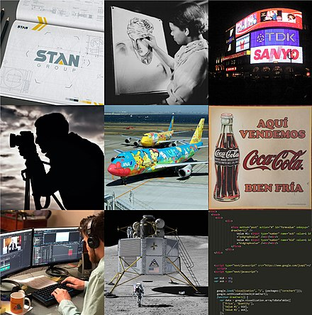
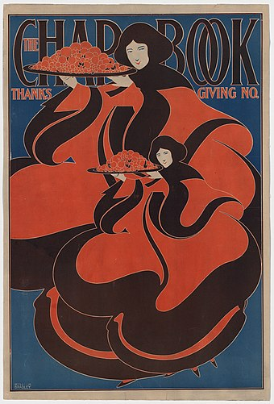
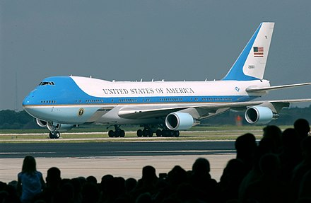
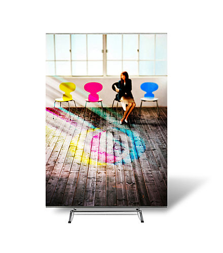

Wiki Page 2
Graphic design is a profession,[2]
academic discipline[3][4][5]
and applied art whose activity consists
in projecting visual communications intended to transmit specific
messages to social groups, with specific objectives.[6] Graphic design
is an interdisciplinary branch of design[1]
and of the fine arts.
Its practice involves creativity, innovation and lateral thinking using
manual or digital tools, where it is usual to use text and
graphics to communicate visually.
The role of the graphic designer in the communication process is that
of encoder or interpreter of the message.
They work on the interpretation, ordering, and presentation of visual
messages. Usually, graphic design uses the aesthetics of typography and
the compositional arrangement of the text, ornamentation, and imagery to
convey ideas, feelings, and attitudes beyond what language alone
expresses. The design work can be based on a customer's demand, a demand
that ends up being established linguistically, either orally or in
writing, that is, that graphic design transforms a linguistic message
into a graphic manifestation.[7]
Graphic design has, as a field of application, different areas of
knowledge focused on any visual communication system. For example,
it can be applied in advertising strategies, or it can also be applied
in the aviation world[8] or space exploration.
[9][10] In this sense, in
some countries graphic design is related as only associated with the
production of sketches and drawings, this is incorrect, since visual
communication is a small part of a huge range of types and classes where
it can be applied.
With origins in Antiquity and the Middle Ages,
[11] graphic design as
applied art was initially linked to the boom of rise of printing in
Europe in the 15th century and the growth of consumer culture in the
Industrial Revolution. From there it emerged as a distinct profession
in the West, closely associated with advertising in the 19th century
[12]
and its evolution allowed its consolidation in the 20th century.
Given the rapid and massive growth in information exchange today,
the demand for experienced designers is greater than ever, particularly
because of the development of new technologies and the need to pay
attention to human factors beyond the competence of the engineers
who develop them.[13]

Terminology
William Addison Dwiggins is often credited with first using the term
"graphic design" in a 1922 article,[14]
although it appears in a
4 July 1908 issue (volume 9, number 27) of Organized Labor, a
publication of the Labor Unions of San Francisco, in an article
about technical education for printers:[15]
An Enterprising Trades Union
… The admittedly high standard of intelligence which prevails among
printers is
an assurance that with the elemental principles of design at their
finger ends many of them will grow in knowledge and develop into
specialists in graphic design and decorating. …
A decade later, the 1917-1918 course catalog of the California School
of Arts & Crafts advertised a course titled Graphic Design and
Lettering, which replaced one called Advanced Design and Lettering.
Both classes were taught by Frederick Meyer.[16]
History
Main Article: History of Graphic Design
In both its lengthy history and in the relatively recent explosion of
visual communication in the 20th and 21st centuries, the distinction
between advertising, art, graphic design and fine art has disappeared.
They share many elements, theories, principles, practices, languages and
sometimes the same benefactor or client. In advertising, the ultimate
objective is the sale of goods and services. In graphic design,
"the essence is to give order to information, form to ideas, expression,
and feeling to artifacts that document the human experience."
[17]
The definition of the graphic designer profession is relatively recent
concerning its preparation, activity, and objectives. Although there is
no consensus on an exact date when graphic design emerged, some date it
back to the Interwar period. Others understand that it began to be
identified as such by the late 19th century.[11]
It can be argued that graphic communications with specific purposes have
their origins in Paleolithic cave paintings and the birth of written
language in the third millennium BCE. However, the differences in
working methods, auxiliary sciences, and required training are such that
it is not possible to clearly identify the current graphic designer with
prehistoric man, the 15th-century xylographer,
or the lithographer of 1890.
The diversity of opinions stems from some considering any graphic
manifestation as a product of graphic design, while others only
recognize those that arise as a result of the application of an
industrial production model—visual manifestations that have been
"projected" to address various needs: productive, symbolic, ergonomic,
contextual, among others.
Nevertheless, the evolution of graphic design as a practice and
profession has been closely linked to technological innovations,
social needs, and the visual imagination of professionals.
[18]
Graphic design has been practiced in various forms throughout history;
in fact, good examples of graphic design date back to manuscripts from
ancient China, Egypt, and Greece. As printing and book production
developed in the 15th century, advances in graphic design continued over
the subsequent centuries, with composers or typographers often designing
pages according to established type.[11]
By the late 19th century, graphic design emerged as a distinct
profession in the West, partly due to the process of
labor specialization that occurred there and partly due to the new
technologies and business possibilities brought about by the
Industrial Revolution. New production methods led to the separation of
the design of a communication medium (such as a poster) from its actual
production. Increasingly, throughout the 19th and early 20th centuries,
advertising agencies, book publishers, and magazines hired art directors
who organized all visual elements of communication and integrated them
into a harmonious whole, creating an expression appropriate to the
content. In 1922, typographer William A. Dwiggins coined the term
graphic design to identify the emerging field.[11]
Throughout the 20th century, the technology available to designers
continued to advance rapidly, as did the artistic and commercial
possibilities of design. The profession expanded greatly, and graphic
designers created, among other things, magazine pages, book covers,
posters, CD covers, postage stamps, packaging, brands, signs,
advertisements, kinetic titles for TV programs and movies, and websites.
By the early 21st century, graphic design had become a global profession
as advanced technology and industry spread worldwide.[11]
Historical Background
Main Article: History of paintings
In China, during the Tang dynasty (618-907) wood blocks were cut to
print on textiles and later to reproduce Buddhist texts. A Buddhist
scripture printed in 868 is the earliest known printed book. Beginning
in the 11th century in China, longer scrolls and books were produced
using movable type printing, making books widely available during the
Song dynasty (960-1279).[19]
n the mid-15th century in Mainz, Germany, Johannes Gutenberg developed a
way to reproduce printed pages at a faster pace using movable type made
with a new metal alloy[20] that created a revolution in the
dissemination of information.[21]
Nineteenth centruy
In 1849, Henry Cole became one of the major forces in design education
in Great Britain, informing the government of the importance of design
in his Journal of Design and Manufactures. He organized the Great
Exhibition as a celebration of modern industrial technology and
Victorian design.
From 1891 to 1896, William Morris' Kelmscott Press was a leader in
graphic design associated with the Arts and Crafts movement, creating
hand-made books in medieval and Renaissance era style,[22]
in addition
to wallpaper and textile designs.[23]
Morris' work, along with the rest
of the Private Press movement, directly influenced Art Nouveau.
[24]
Will H. Bradley became one of the notable graphic designers in the late
nineteenth-century due to creating art pieces in various Art
Nouveau styles. Bradley created a number of designs as promotions for a
literary magazine titled The Chap-Book.[25]
Twentith centruy

In 1917, Frederick H. Meyer, director and instructor at the California
School of Arts and Crafts, taught a class entitled "Graphic Design and
Lettering".[26] Raffe's Graphic Design,
published in 1927, was the first
book to use "Graphic Design" in its title.[27]
In 1936, author and
graphic designer Leon Friend published his book titled "Graphic Design"
and it is known to be the first piece of literature to cover the
topic extensively.[28]
The signage in the London Underground is a classic design example
of the modern era. Although he lacked artistic training,
Frank Pick led the Underground Group design and publicity movement. The
first Underground station signs were introduced in 1908 with a design of
a solid red disk with a blue bar in the center and the name of the
station. The station name was in white sans-serif letters. It was in
1916 when Pick used the expertise of Edward Johnston to design a new
typeface for the Underground. Johnston redesigned the Underground sign
and logo to include his typeface on the blue bar in the center of a red
circle.[30]
In the 1920s, Soviet constructivism applied 'intellectual production' in
different spheres of production. The movement saw individualistic art as
useless in revolutionary Russia and thus moved towards creating objects
for utilitarian purposes. They designed buildings, theater sets, posters
, fabrics, clothing, furniture, logos, menus, etc.[31]

Jan Tschichold codified the principles of modern typography in his 1928
book, New Typography.[32] He later repudiated the philosophy
he espoused in this book as fascistic, but it remained influential.
[citation needed] Tschichold, Bauhaus typographers such as Herbert Bayer
and László Moholy-Nagy and El Lissitzky greatly influenced graphic
design. They pioneered production techniques[citation needed] and
stylistic devices used throughout the twentieth century. The following
years saw graphic design in the modern style gain widespread acceptance
and application.[33]
The professional graphic design industry grew in parallel with
consumerism. This raised concerns and criticisms, notably from within
the graphic design community with the First Things First manifesto.
First launched by Ken Garland in 1964, it was re-published as the First
Things First 2000 manifesto in 1999 in the magazine Emigre 51
[34] stating "We propose a reversal of priorities in favor of
more useful, lasting and democratic forms of communication - a mindshift
away from product marketing and toward the exploration and production of
a new kind of meaning. The scope of debate is shrinking; it must expand.
Consumerism is running uncontested; it must be challenged by other
perspectives expressed, in part, through the visual languages and
resources of design."[35]
Applications
Graphic design can have many applications, from road signs to technical
schematics and reference manuals. It is often used in branding products
and elements of company identity such as logos, colors, packaging,
labelling and text.
From scientific journals to news reporting, the presentation of opinion
and facts is often improved with graphics and thoughtful compositions of
visual information - known as information design. With the advent of the
web, information designers with experience in interactive tools are
increasingly used to illustrate the background to news stories.
Information design can include Data and information visualization, which
involves using programs to interpret and form data into a visually
compelling presentation, and can be tied in with information graphics.

Skills
A graphic design project may involve the creative presentation of
existing text, ornament, and images.
The "process school" is concerned with communication; it highlights the
channels and media through which messages are transmitted and by which
senders and receivers encode and decode these messages. The semiotic
school treats a message as a construction of signs which through
interaction with receivers, produces meaning; communication as an agent.
[citation needed]
Typeography
Main Article: Typography
Typography includes type design, modifying type glyphs and arranging
type. Type glyphs (characters) are created and modified using
illustration techniques. Type arrangement is the selection of typefaces,
point size, tracking (the space between all characters used),
kerning (the space between two specific characters) and leading
(line spacing).
Typography is performed by typesetters, compositors, typographers,
graphic artists, art directors, and clerical workers. Until the digital
age, typography was a specialized occupation. Certain fonts communicate
or resemble stereotypical notions. For example, 1942 Report is a font
which types text akin to a typewriter or a vintage report.
[36]
Page Layout
Further information: Grid (graphic design)
Page layout deals with the arrangement of elements (content) on a page,
such as image placement, text layout and style. Page design has always
been a consideration in printed material and more recently extended to
displays such as web pages. Elements typically consist of type (text),
images (pictures), and (with print media) occasionally place-holder
graphics such as a dieline for elements that are not printed with ink
such as die/laser cutting, foil stamping or blind embossing.
Grids
A grid serves as a method of arranging both space and information,
allowing the reader to easily comprehend the overall project.
Furthermore, a grid functions as a container for information and a means
of establishing and maintaining order. Despite grids being utilized for
centuries, many graphic designers associate them with Swiss design. The
desire for order in the 1940s resulted in a highly systematic approach
to visualizing information. However, grids were later regarded as
tedious and uninteresting, earning the label of "designersaur." Today,
grids are once again considered crucial tools for professionals, whether
they are novices or veterans.[37]
Tools
In the mid-1980s desktop publishing and graphic art software
applications introduced computer image manipulation and creation
capabilities that had previously been manually executed. Computers
enabled designers to instantly see the effects of layout or typographic
changes, and to simulate the effects of traditional media. Traditional
tools such as pencils can be useful even when computers are used for
finalization; a designer or art director may sketch numerous concepts as
part of the creative process.[38] Styluses can be used with
tablet computers to capture hand drawings digitally.[39]
Computers & Software
Designers disagree whether computers enhance the creative process.
[40] Some designers argue that computers allow them to
explore multiple ideas quickly and in more detail than can be achieved
by hand-rendering or paste-up.[41] While other designers
find the limitless choices from digital design can lead to paralysis or
endless iterations with no clear outcome.
Most designers use a hybrid process that combines traditional and
computer-based technologies. First, hand-rendered layouts are used to
get approval to execute an idea, then the polished visual product is
produced on a computer.
Graphic designers are expected to be proficient in software programs for
image-making, typography and layout. Nearly all of the popular and
"industry standard" software programs used by graphic designers since
the early 1990s are products of Adobe Inc. Adobe Photoshop
(a raster-based program for photo editing) and Adobe Illustrator
(a vector-based program for drawing) are often used in the final stage.
CorelDraw, a vector graphics editing software developed and marketed by
Corel Corporation, is also used worldwide. Designers often use
pre-designed raster images and vector graphics in their work from online
design databases. Raster images may be edited in Adobe Photoshop, vector
logos and illustrations in Adobe Illustrator and CorelDraw, and the
final product assembled in one of the major page layout programs, such
as Adobe InDesign, Serif PagePlus and QuarkXPress.
Many free and open-source programs are also used by both professionals
and casual graphic designers. Inkscape uses Scalable Vector Graphics
(SVG) as its primary file format and allows importing and exporting
other formats. Other open-source programs used include GIMP for
photo-editing and image manipulation, Krita for digital painting, and
Scribus for page layout.
Related Design Fields
Interface Design
Main Article: